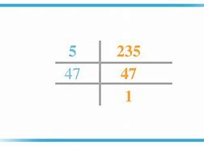
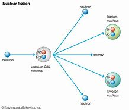

Mathematical Properties
The number 235 is an odd, composite number. It has two prime factors: 5 and 47, making its prime factorization 5 x 47. Its divisors are 1, 5, 47, and 235. Though not a prime number, it holds interest in number theory as a product of distinct primes.
Scientific Relevance
In science, numbers often appear in specific measurements or constants. While 235 itself is not a major scientific constant, it does appear in some niche contexts. For example, uranium-235 (U-235) is a well-known isotope used in nuclear reactors and atomic research. Its half-life and nuclear properties make it crucial for energy production and scientific studies.
